A wearable two-IMU controller driving a 4-DOF robotic arm over ESP-NOW · Solo project, Introduction to IoT and Engineering Design, Seoul National University · Spring semester, 2nd year
A wearable motion-capture controller that drives a 4-DOF robotic arm in real time over a wireless link. Two MPU6050 IMUs are strapped to the back of the hand and the forearm; the operator tilts their arm and the robot follows. A potentiometer mounted on a finger linkage opens and closes the gripper.
Built end to end: 3D-printed arm, wearable sensor harness, firmware on both ends, wireless protocol, and the signal processing in between.
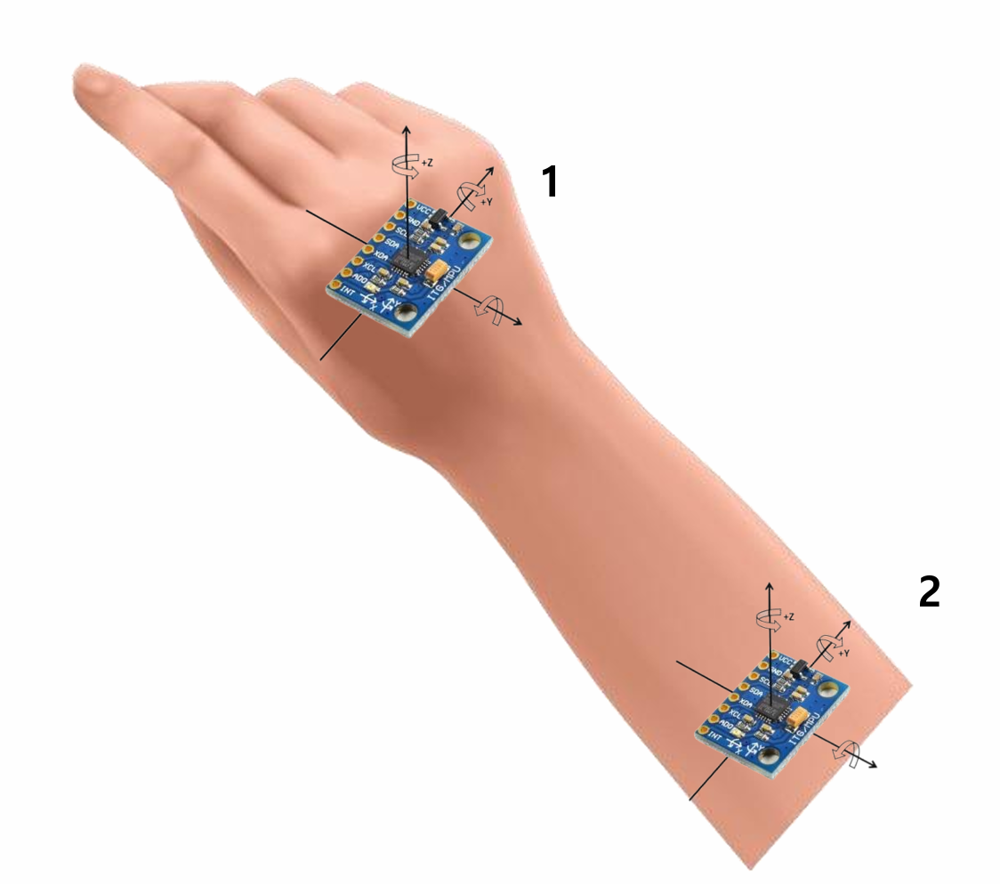
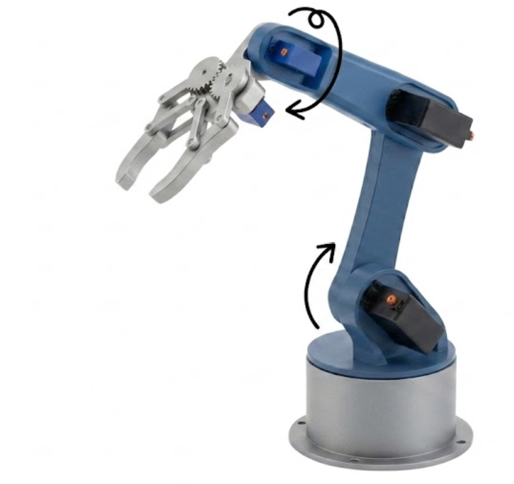
Two ESP32 nodes talking over ESP-NOW, a connectionless peer-to-peer protocol that needs no router and adds minimal latency — important for teleoperation, where every millisecond of lag is felt directly.
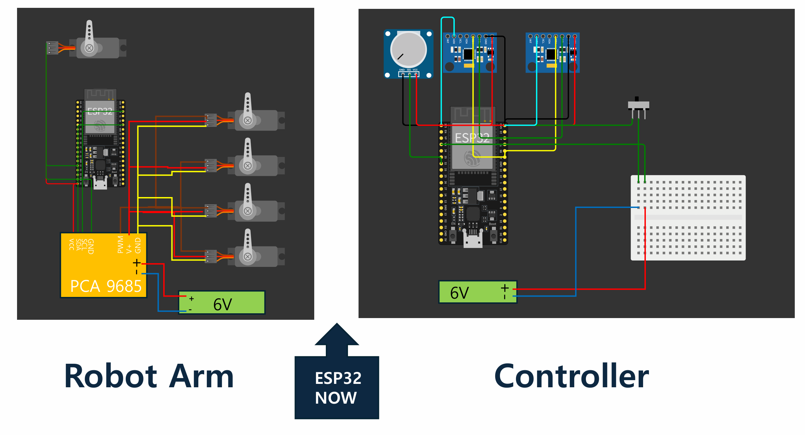
Robot arm — Open source 3D-printed robot arm, five servos(mg 996r, sg90): base rotation, two arm joints, wrist, and gripper. The four arm servos run off a PCA9685 driver at 50 Hz; the gripper servo is driven directly from an ESP32 GPIO.
Controller — worn, not held. The ESP32 and forearm IMU strap to the forearm with velcro; a second unit sits on the back of the hand carrying the hand IMU and the gripper potentiometer. Keeping both hands free was the point: the operator's arm is the input device.
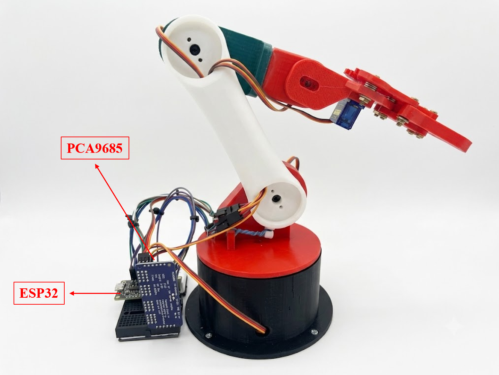
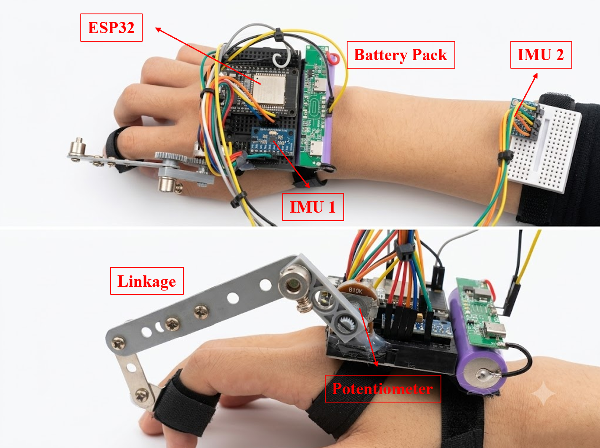
The first working version had a flaw that only appears once you wear it: the robot responded to the wrong motion.
An accelerometer strapped to the hand measures the hand's orientation relative to gravity. But that orientation changes both when the wrist bends and when the entire arm moves with the wrist locked. One sensor cannot tell those two cases apart, so lifting the whole arm produced the same command as bending the wrist.
The textbook answer is a kinematic model of the arm — link lengths, joint angles, forward kinematics. For a one-semester project on two 8-bit-friendly microcontrollers, that was more machinery than the problem deserved.
The solution was to subtract one sensor from the other:
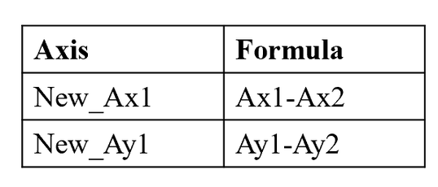
This yields the hand's orientation relative to the forearm, which is what a wrist joint physically is:
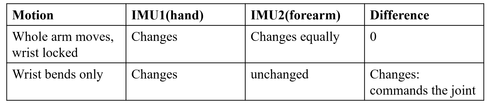
Whole-arm motion becomes common-mode and cancels; wrist motion survives. The joints that needed to distinguish the two are driven from these difference terms, while the joints meant to follow gross arm orientation read a single sensor directly. Two subtractions replaced a kinematic chain.
The second problem found in testing: small involuntary hand tremor made the arm visibly shake and jump. The raw accelerometer signal carries the intended motion and the tremor and electrical noise in the same channel, separated only by how fast each one changes.
An exponential moving average low-pass filter is applied at both ends of the link:
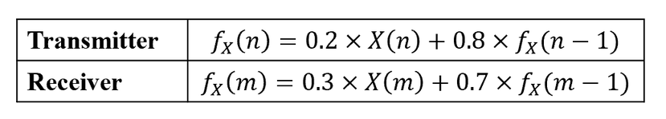
Each stage is a first-order LPF costing one multiply-accumulate and one stored float — cheap enough to run inside a 2 ms loop. In cascade:
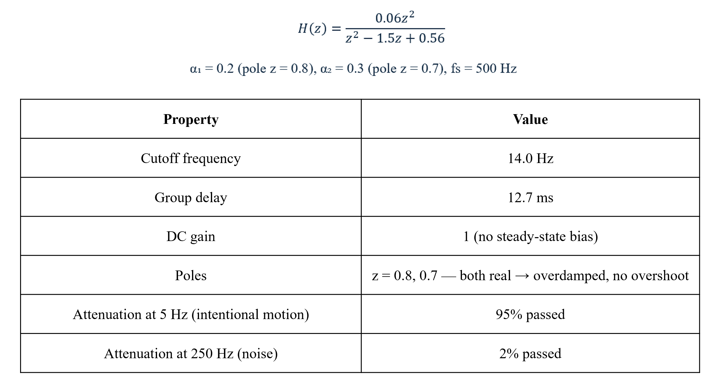
Both poles are real and inside the unit circle, so the arm settles onto a new position without ringing past it — the response is smooth rather than springy. The 14 Hz corner sits above the bandwidth of deliberate arm motion (1–5 Hz) and below the tremor and sensor noise, which is why the shake disappears while the intended motion does not.
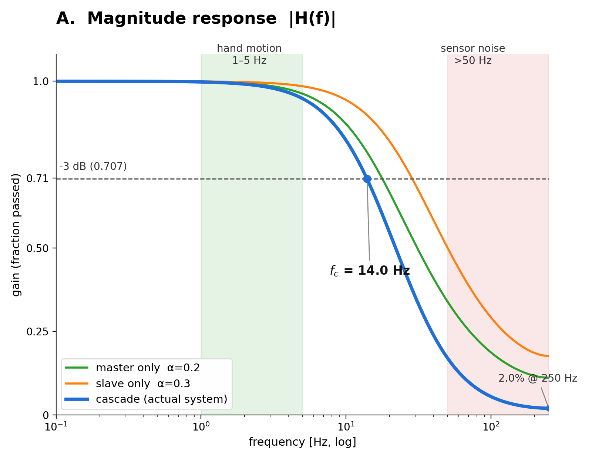
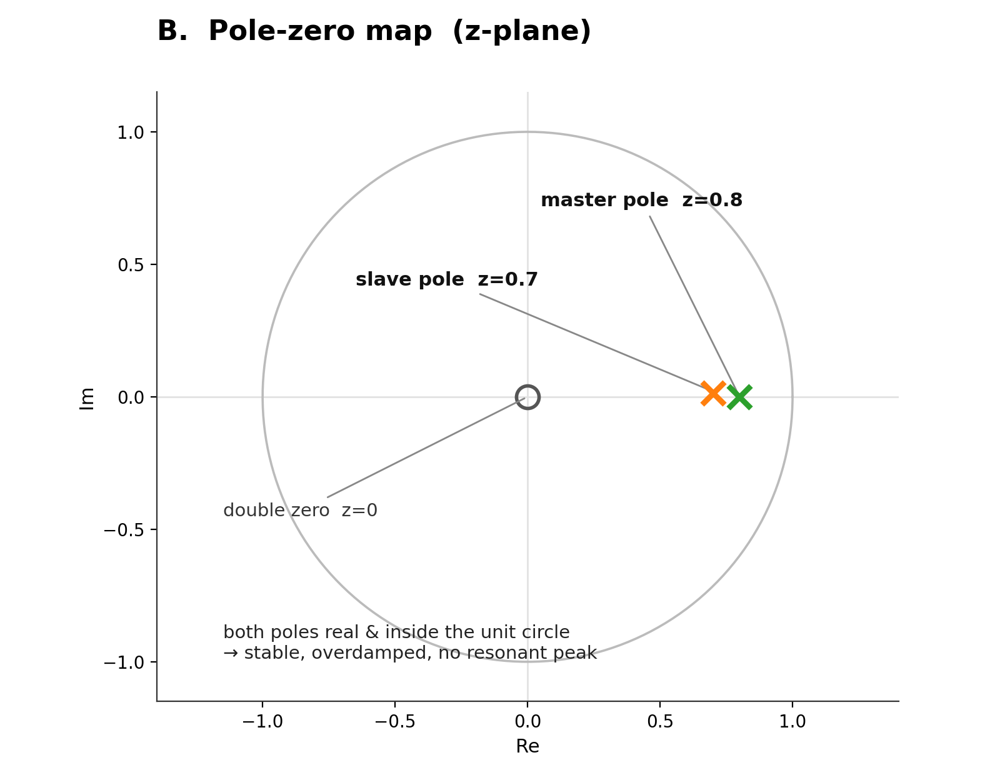
Filter characteristics
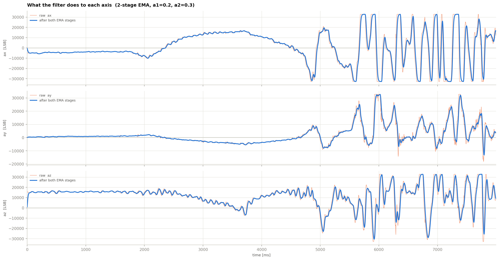
Raw vs. filtered signal on each axis
The filtered trace (blue) sits right on top of the raw signal (orange) through the slow, large swings — the deliberate arm motion in the 1–5 Hz band is followed almost without lag. Where the raw signal breaks into fast, jagged spikes, the filter rounds them off: the high-frequency tremor and sensor noise are smoothed out while the underlying trajectory is left intact.
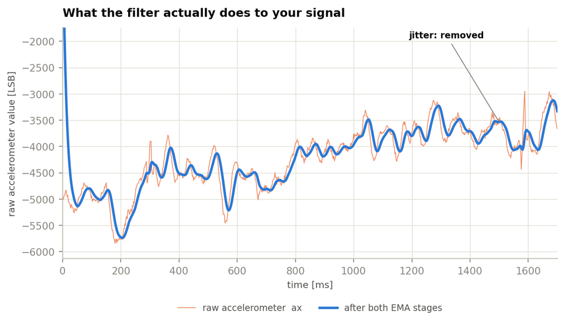
Zoom on the first 1.6 s (ax axis)
Zooming in on just the first 1.6 s of the ax axis makes the effect clear at close range: the raw signal (orange) is covered in a fine sawtooth jitter, while the filtered signal (blue) traces the same path as one continuous line. The slow rises and dips are preserved; only the tremble riding on top is taken out.
The filtered accelerometer value is mapped linearly onto the servo PWM:
Under quasi-static conditions the accelerometer reads the gravity component, a = g·sin θ, so the effective relationship between hand tilt and servo position is
fx is the filtered accelerometer value, and — as we worked out earlier — under slow (quasi-static) motion this value is dominated by the gravity component: fx ≈ 16384·sin θ, where θ is the hand tilt angle. Substituting this into the map equation:
Near θ = 0 (small angles), sin θ ≈ θ (in radians), so for a small change in θ:
In other words: "the servo's PWM value moves by about 4.6 ticks for every 1° the hand tilts." That's the system's sensitivity expressed in degrees